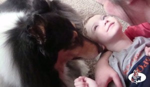
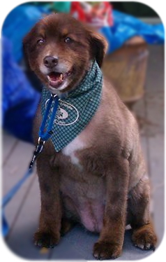

Healing Stories
This is a healing story of a child with a disability and a very special therapy dog – Chelsea – who helped him overcome his fear and develop skills that his therapists did not know would be possible for him.
Honoring the Memory
When 7 and 1/2 year old Honey became registered as a therapy animal in July 2013, no one knew that her time to help others along their healing journey would be cut short due to health issues of her own. Honey was familiar with pain. When Honey’s handler Kristie rescued her a couple of years ago, Honey had broken teeth, scrapes and bruises.
